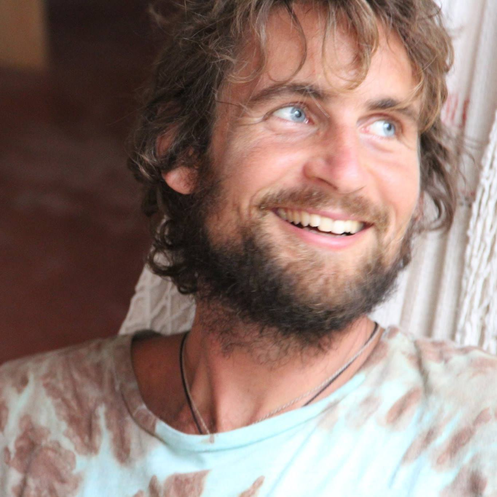

Estudante da Trybe
Formado em Administracao de Empresas
Carioca e morador do Rio de Janeiro
Adoro viajar e explorar lugares novos. Principalmente locais que me permitam estar em contato com a natureza: pisar na terra, me banhar na cachoeira ou dar um bom mergulho no mar.
Tambem curto conhecer outras pessoas, apreciar suas culturas e suas formas de vida para ampliar minha visao e entendimento sobre a vida.
Complementando todo o lado afetivo que sou apaixonado, também amo tecnologia. Entender como as coisas funcionam, criar solucoes tecnologicas ou até resolver qualquer probleminha técnico me empolga de forma que todo o esforço se torna leve.